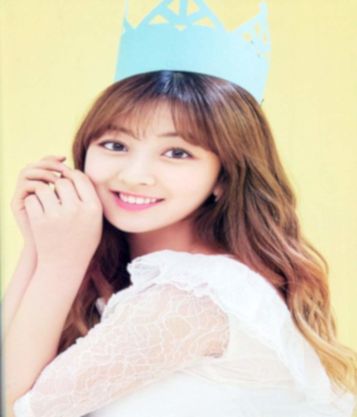
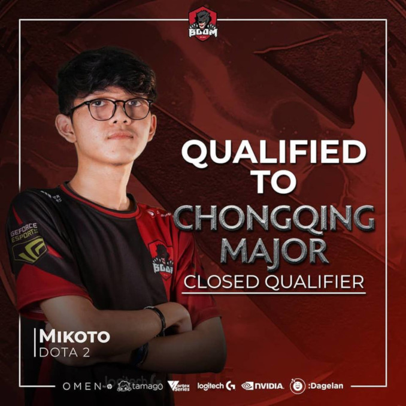

Azriel Baruna
Selamat menjelajah Analyst
Azriel
환영
Tentang Saya
Azriel BarunaJanuary,30,2002

Azriel Baruna Saya adalah seorang pelajar yang beasal dari SMK SMAKBO.Saya lahir di Bogor tanggal 30 januari 2002.Saya adalah anak pertama dari 2 bersaudara.Senelum saya belajar di SMAKBO saya bersekolah di SMPN 1 Bogor.
Halaman ini saya buat untuk memenuhi tugas KKPI di mana harus saya bereskan dengan waktu yang ditentukan.Sebenarnya sekarang saya sedang menekuni bidang ini.Doakan saya agar bisa sukses di bidang ini !!
Karya
Karya yang saya buat dengan GIMP

GIF Saya sedikit kesusahan dalam membuat karya ini
Ada cerita unik dibalik pembuatan gif ini, pada saat itu saya baru menggunakan aplikasi GIMP dan masih tidak tau apa apa.Ketika saya save file ini ternyata ukuran filenya sangat besar,itu sidebabkan karena saya bukan merubah ukuran gambarnya, tetapi saya malah merubah ukuran yang lain haha,untung saja bu Meti membantu saya XD.

Ini adalah Hobi saya
Hobi saya bermain dota 2 jadi saya edit bersama pro team dota 2 EG
Dota2 Dota 2 merupakan salah satu game free to play yang saya sukai.karena selain free to play game ini juga tidak pay to win
Pada saat mengerjakan tugas ini saya bingung untuk mencari foto saya, karena jujur saya jarang foto diri saya sendiri (selfie).Akhirnya saya memasukan foto saya ketika menggunakan fasilitas di gravimetri, foto ini saya ambil dari instagram saya
Mimpi saya
Ini adalah foto saya bersama idola sayadoakan dia jadi istri saya XD
Jihyo adalah adalah salah satu member Twice yang juga berposisi sebagai leader dari group idol yang berasal dari agensi JYP.
Saya sebenarnya tidak mengidolakan dia tetapi lebih kearah kagum karena jihyo merupakan salah satu tipe wanita yang saya sukai(XD).Awal saya suka adalah ketika saya bersama teman saya yang bernama naufal sedang bermain game bersama di warnet dan tidak sengaja melihat thumbnail twice di youtube.
APAKAH KALIAN BISA MENEBAK MANA YANG BERNAMA NAUFAL?
박지효
J당신과 함께 있는 곳이 내가 제일 좋아하는 곳입니다p>
Beberapa orang di jaman sekarang yang saya kagumi
-
Sungha Jung
Saya kagum dengan permainan gitarnya -

Jihyo
Saya kagum dengan ketangguhan dan suaranya. -

Mikoto
Pro Player Dota2 yang mengharumkan Indonesia di Internasional
Tags
Tugas KPOP Twice Game Dota2 Korea Azriel KKPI